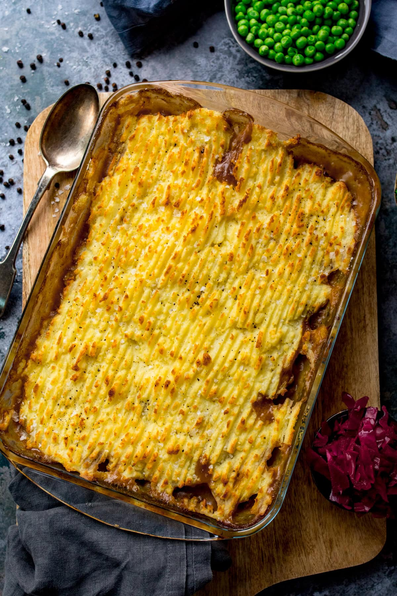

Cottage pie

This English classic has a deeply savoury beef mince filling smothered in gravy topped with creamy mashed potato, baked until golden.
Ingredients
- 3 tbsp Olive Oil
- 1.25kg Beef Mince
- 2 Onions
- 3 Carrots
- 3 Celery Sticks
- 2 Garlic Cloves
- 3 tbsp plain flour
- 1 tbsp tomato puree
- 850ml beef stock
- 4 tbsp Worcestershire sauce
- a few thyme
- 2 bay leaves
- 1.8kg potatoes
- 225ml milk
- 25g butter
- 200g strong chedder
- freshly grated nutmeg
Steps
- Put the potatoes onto boil for the mash, then while they’re boiling, fry up onions, celery, carrot, minced beef, seasoning and a good dash of Worcestershire sauce. Once the meat has browned, add in plenty of beef stock.
- Bring to the boil, then simmer gently for about 10 minutes.
- Drain and mash the potatoes. I use a potato ricer for perfect lump-free mashed potato. We add flavour and creaminess to the mashed potato by stirring in salt, pepper, cream and butter.
- Thicken the meat sauce by stirring in a cornstarch-and-water-mixture. Then use a slotted spoon to scoop out the meat and vegetables, leaving the majority of the liquid behind in the pan (don’t worry, there’ll still be enough gravy in the pie itself if you use a slotted spoon). This will be your gravy.
- Spoon the mashed potato on top of the meat in blobs.
- Then use a fork to join up the blobs and cover the meat. Use the fork to ruffle up the mash too – the more texture you have, the more crispy bits your mashed potato will have. Place in a preheated oven at 200C/400F for about 20 minutes, until the top is golden brown.
Home